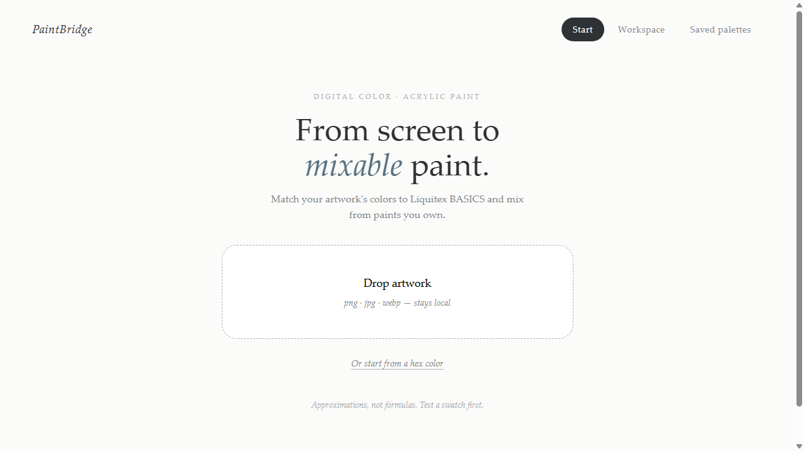
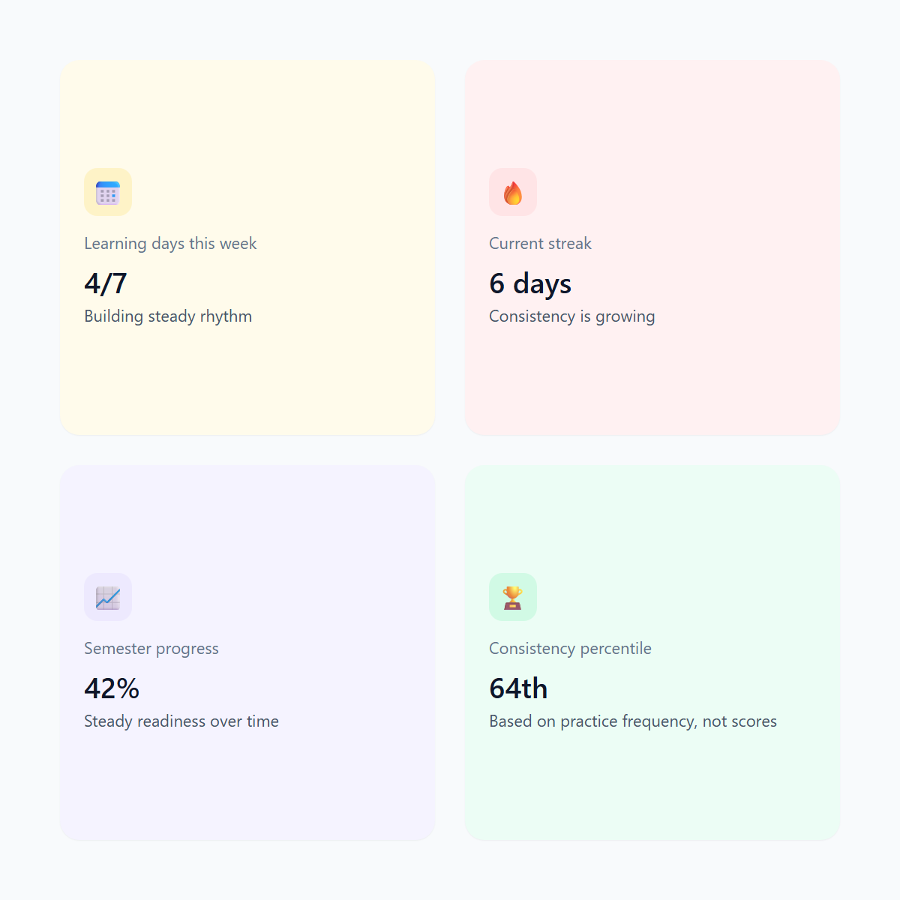

PaintBridge: digital color, real paint
Pick any color on your screen and PaintBridge gives you a real acrylic recipe for it. It matches to Liquitex BASICS paints, so what lands on the canvas is what you actually chose.
I turn how people think into clear products.
I'm Diane, a Psychology major at UT Austin with Business and Chinese minors and a Pre-Health certificate. I thrive in hands-on, problem-solving environments, and I'm drawn to product management from both a creator's and a consumer's perspective. I'm currently looking for a full-time role. In my free time, I love literary fiction, dance, fine arts, and exploring new culinary experiences!
Products I wished existed, and the resources that helped me get there.

Pick any color on your screen and PaintBridge gives you a real acrylic recipe for it. It matches to Liquitex BASICS paints, so what lands on the canvas is what you actually chose.

An ACT prep app that adapts to how each student is actually doing. It eases off when someone's rebuilding momentum and pushes harder when they're on a roll.
Currently sharpening the craft
I like the problems that live between people and systems: why someone hesitates, where a flow loses them, which decision actually matters.
Psychology taught me how people actually think. Business, plus a pre-health detour, taught me where the stakes live. At MasteryPrep and Enovis Surgical I've built and owned work that shipped: an AI tutor I took from positioning to alpha, surgeon research that changed what got built next, market analysis that backed real go-to-market calls. Texas Product Catalyst's fellowship is where I practice the craft deliberately.
I'm a senior illustrator at The Daily Texan, president of the Texas Asian Pan-Hellenic Council, and a dance lead on my school's dance team. Different rooms, same lesson: know your audience, then make the complex feel obvious.
Owned a 0→1 feature adopted across 3 internal teams and shipped 1-3 features a day, using AI-assisted development and prompt chaining on a greenfield education app.
Lead Texas's only all-Asian Greek council, 400+ members and a $5,000+ budget, with governance and compliance overhauls that cut operational liabilities 95%.
Owned end-to-end delivery of a 10-hour, 3,000+ attendee festival, bridging creative and technical crews and clearing real-time blockers.
Ran global research with 150+ surgeons to steer what got built next, and overhauled 20+ customer-facing assets, halving inquiry response time.
Hands-on product fellowship: secondary market research, user-feedback analysis, and Agile roadmapping on real product work.
B.S. Psychology; minors in Business and Chinese; Pre-Health certificate.
Open to full-time product roles.
dianech.guo@gmail.com ↗